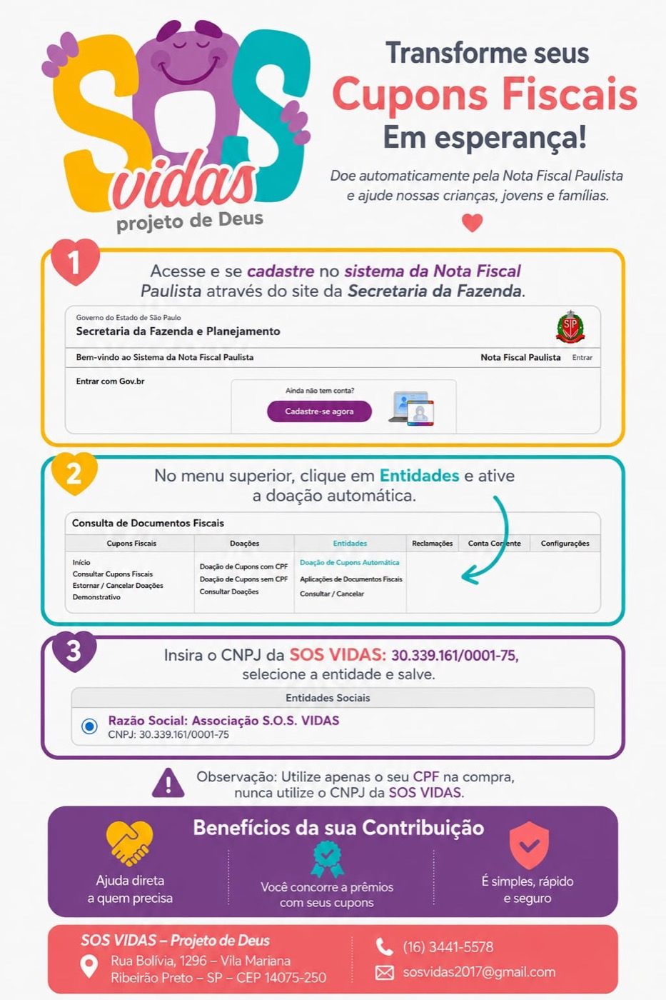
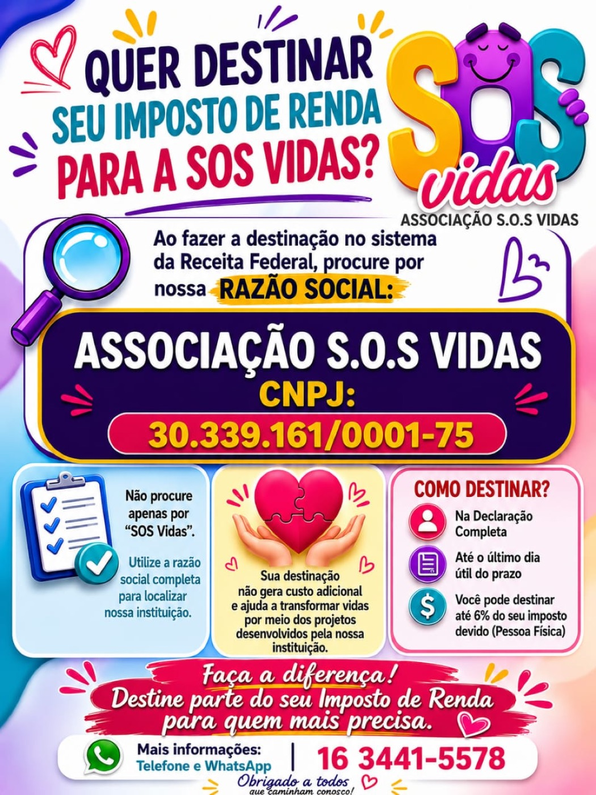

Alimentos não perecíveis
- Arroz, feijão, macarrão
- Óleo, sal, açúcar, farinha
- Leite em pó, achocolatado
- Enlatados e conservas
- Biscoitos e cereais
- Produtos de higiene pessoal
Escolha o valor e contribua com a SOS Vidas.
Associação SOS Vidas · Ribeirão Preto/SP
No app do banco, escolha PIX por chave CNPJ.
Confira o nome e o CNPJ da instituição no banco antes de confirmar. Você escolhe quanto doar. Precisa de ajuda?
Aceitamos alimentos e roupas diretamente em nossa sede, de segunda a sexta-feira.
Itens de cuidado essencial para idosos, crianças e pessoas com necessidades especiais atendidas pela SOS Vidas.
Tamanhos P, M, G e XG. Para idosos em situação de dependência atendidos pelo programa Garantia de Direitos.
Todas as faixas etárias (RN, P, M, G e XG). Apoio a famílias em vulnerabilidade com crianças pequenas.
Para reforço nutricional de idosos e adultos em tratamento.
Ex.: Nutren, Sustagem e similares
Fórmulas nutricionais para crianças e adultos com necessidades específicas.
Ex.: Fortini Plus, Modulen, PediaSure
Importante: aceitamos itens dentro do prazo de validade e em embalagem íntegra. Em caso de dúvida sobre marca ou tipo, fale conosco antes.
Você pode destinar parte do seu cupom fiscal e do seu Imposto de Renda diretamente para a SOS Vidas — siga o passo a passo das instruções abaixo.

Você pode destinar o saldo do programa de devolução do ICMS (Nota Fiscal) diretamente para a SOS Vidas — sem custo nenhum para você. Siga o passo a passo da imagem para fazer a doação pelo aplicativo.

A SOS Vidas já é regularizada junto ao FNAS (Fundo Nacional de Assistência Social), o que permite que você direcione parte do imposto devido para a nossa instituição sem nenhum custo adicional. Siga o tutorial da imagem para fazer a destinação na sua declaração.
Minha doação é dedutível do Imposto de Renda?
Sim. A SOS Vidas já é regularizada junto ao FNAS (Fundo Nacional de Assistência Social), o que permite a dedução da doação no Imposto de Renda. Veja na seção "Outras formas de ajudar" o tutorial passo a passo de como fazer a destinação. Em caso de dúvida, fale com a nossa equipe.
Recebo comprovante da doação?
Sim. Para doações via PIX, o comprovante bancário é suficiente. Para doações físicas, emitimos um recibo mediante solicitação.
Como saber que minha doação chegou às famílias?
Publicamos regularmente fotos e relatórios das atividades no Instagram @sos_vidass. Acesse também nossa página de Transparência para ver os relatórios completos.
Posso fazer uma doação recorrente?
Sim! Entre em contato pelo WhatsApp para combinar uma doação mensal e tornar-se um parceiro fixo da SOS Vidas.
A SOS Vidas tem CNPJ ativo?
Sim. Somos uma organização legalmente constituída. Os dados institucionais completos estão disponíveis em nossa página de Transparência.
Ainda tem dúvidas?
Falar no WhatsApp